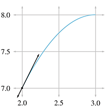
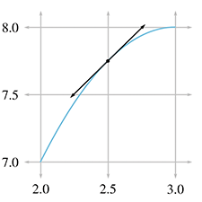
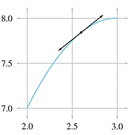
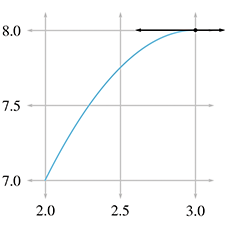
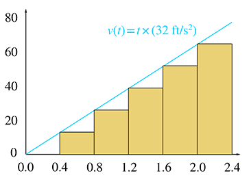
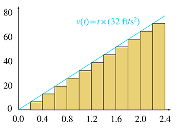
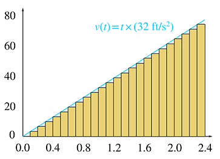

“Ladies and gentlemen, may I direct your attention to the center ring. Witness before you two ordinary textbooks, one labeled College Physics and the other Calculus. Their combined 2,500+ pages weigh over 25 lbs. Yet in this chapter and the next, your brave stunt-authors will attempt a most death-defying and impossible spectacle of mysticism and subterfuge: to reduce these two massive books into a mere 150 pages!”
Just like any good circus act, this one is prefaced with a lot of build up to set your expectations. The difference here is that the purpose of our preface is to lower your expectations.
11.1Overview and Other Expectation-Reducing
Remarks
OK, there's no way we can really cover all of physics and calculus in two chapters. As any politician knows, the secret to effectively communicate complicated subject matter in a short amount of time is to use lies, both the omission and commission kind. Let's talk about each of these kinds of lies in turn, so you will know what's really in store.
11.1.1What is Left Out?
Just about everything—let's talk about what we are leaving out of physics first. To put the word “physics” on this chapter would be even more of an insult to people who do real physics than this chapter already is. We are concerned only with mechanics, and very simple mechanics of rigid bodies at that. Some topics traditionally found in a first-year physics textbook that are not discussed in this book include:
- energy and work
- temperature, heat transfer, thermodynamics, entropy
- electricity, magnetism, light
- gases, fluids, pressure
- oscillation and waves.
A note about energy and work is in order, because even in the limited context of mechanics, the fundamental concept of energy plays a central role in traditional presentations. Many problems are easier to solve by using conservation of energy than by considering the forces and applying Newton's laws. (In fact, an alternative to the Newtonian dynamics that we study in this book exists. It is known as Lagrangian dynamics and focuses on energy rather than forces. When used properly, both systems produce the same results, but Lagrangian dynamics can solve certain problems more elegantly and is especially adept at handling friction, compared to Newtonian dynamics.) However, at the time of this writing, basic general purpose digital simulations are based on Newtonian dynamics, and energy does not play a direct role. That isn't to say an understanding of energy is useless; indeed disobedience of the conservation of energy law is at the heart of many simulation problems! Thus, energy often arises more as a way to understand the (mis)behavior of a digital simulation, even if it doesn't appear in the simulation code directly.
Now let's talk about the ways in which this book will irritate calculus professors. We think that a basic understanding of calculus is really important to fully grasp many of the concepts from physics. Conversely, physics provides some of the best examples for explaining calculus. Calculus and physics are often taught separately, usually with calculus coming first. It is our opinion that this makes calculus harder to learn, since it robs the student of the most intuitive examples—the physics problems for which calculus was invented to solve! We hope interleaving calculus with physics will make it easier for you to learn calculus.
Our calculus needs are extremely modest in this book, and we have left out even more from calculus than we did from physics. After reading this chapter, you should know:
- The basic idea of what a derivative measures and what it is used for.
- The basic idea of what an integral measures and what it is used for.
- Derivatives and integrals of trivial expressions containing polynomials and trig functions.
Of course, we are aware that a large number of readers may already have this knowledge. Take a moment to put yourself into one of the following categories:
- I know absolutely nothing about derivatives or integrals.
- I know the basic idea of derivatives and integrals, but probably couldn't solve any freshman calculus problems with a pencil and paper.
- I have studied some calculus.
Level 2 knowledge of calculus is sufficient for this book, and our goal is to move everybody who is currently in category 1 into category 2. If you're in category 3, our calculus discussions will be a (hopefully entertaining) review.We have no delusions that we can move anyone who is not already there into category 3.
11.1.2Some Helpful Lies about Our Universe
The universe is commonly thought to be discrete in both space and time. Not only is matter broken up into discrete chunks called atoms, but there is evidence that the very fabric of space and time is broken up into discrete pieces also. Now, there is a difference of opinion as to whether it's really that way or just appears that way because the only way we can interact with space is to throw particles at it, but it's our opinion that if it looks like a duck, walks like a duck, quacks like a duck, has webbed feet and a beak, then it's a good working hypothesis that it tastes good when put into eggrolls with a little dark sauce.
For a long time, the mere thought that the universe might not be continuous had not even considered the slightest possibility of crossing anybody's mind, until the ancient Greeks got a harebrained and totally unjustified idea that things might be made up of atoms. The fact that this later turned out to be true is regarded by many as being good luck rather then good judgment. Honestly, who would have thought it? After all, everyday objects, such as the desk on which one of the authors is currently resting his wrists as he types this sentence, give every appearance of having smooth, continuous surfaces. But who cares? Thinking of the desk as having a smooth, continuous surface is a harmless but useful delusion that lets the author rest his wrists comfortably without worrying about atomic bond energy and quantum uncertainty theory at all.
Not only is this trick of thinking of the world as continuous a handy psychological rationalization, it's also good mathematics. It turns out that the math of continuous things is a lot less unwieldy than the math of discrete things. That's why the people who were thinking about how the world works in the 15th century were happy to invent a mathematics for a continuous universe; experimentally, it was a good approximation to reality, and theoretically the math worked out nicely. Sir Isaac Newton was thus able to discover a lot of fundamental results about continuous mathematics, which we call “calculus,” and its application to the exploration of a continuous universe, which we call “physics.”
Now, we're mostly doing this so that we can model a game world inside a computer, which is inherently discrete. There's a certain amount of cognitive dissonance involved with programming a discrete simulation of a continuous model of a discrete universe, but we'll try not to let it bother us. Suffice it to say that we are in complete control of the discrete universe inside our game, and that means that we can choose the kind of physics that applies inside that universe. All we really need is for the physical laws to be sufficiently like the ones we're used to for the player to experience willing suspension of disbelief, and hopefully say, “Wow! Cool!” and want to spend more money. For almost all games that means a cozy Newtonian universe without the nasty details of quantum mechanics or relativity. Unfortunately, that means also that there are a pair of nasty trolls lurking under the bridge, going by the names of chaos and instability, but we will do our best to appease them.
For the moment, we are concerned about the motion of a small object called a “particle.” At any given moment, we know its position and velocity.1 The particle has mass. We do not concern ourselves with the orientation of the particle (for now), and thus we don't think of the particle as spinning. The particle does not have any size, either. We will defer adding those elements until later, when we shift from particles to rigid bodies.
We are studying classical mechanics, also known as Newtonian mechanics, which has several simplifying assumptions that are incorrect in general but true in everyday life in most ways that really matter to us. So we can darn well make sure they are true inside our computer world, if we please. These assumptions are:
- Time is absolute.
- Space is Euclidian.
- Precise measurements are possible.
- The universe exhibits causality and complete predictability.
The first two are shattered by relatively, and the second two by quantum mechanics. Thankfully, these two subjects are not necessary for video games, because your authors do not have more than a pedestrian understanding of them.
We will begin our foray into the field of mechanics by learning about kinematics, which is
the study of the equations that describe the motion of a particle in various simple but
commonplace situations. When studying kinematics, we are not concerned with the causes of
motion—that is the subject of
dynamics, which will be covered in Chapter 12. For now, “ours is not to
question why,” ours is just to do the math to get equations that predict the position, velocity,
and acceleration of the particle at any given time
Because we are treating our objects as particles and tracking their position only, we will not consider their orientation or rotational effects until Chapter 12. When rotation is ignored, all of the ideas of linear kinematics extend into 3D in a straightforward way, and so for now we will be limiting ourselves to 2D (and 1D). This is convenient, since the authors do not know how to design those little origami-like things that lay flat and then pop up when you open the book, and the publisher wouldn't let us even if we were compulsive enough to learn how to do it. Later we'll see why treating objects as particles is perfectly justifiable.
11.2Basic Quantities and Units
Mechanics is concerned with the relationship among three fundamental quantities in nature: length, time, and mass. Length is a quantity you are no doubt familiar with; we measure length using units such as centimeters, inches, meters, feet, kilometers, miles, and astronomical units.2 Time is another quantity we are very comfortable with measuring, in fact most of us probably learned how to read a clock before we learned how to measure distances.3 The units used to measure time are the familiar second, minute, day, week, fortnight,4 and so on. The month and the year are often not good units to use for time because different months and years have different durations.
The quantity mass is not quite as intuitive as length and time. The measurement of an object's mass is often thought of as measuring the “amount of stuff” in the object. This is not a bad (or at least, not completely terrible) definition, but its not quite right, either [1]. A more precise definition might be that mass is a measurement of inertia, that is, how much resistance an object has to being accelerated. The more massive an object is, the more force is required to start it in motion, stop its motion, or change its motion.
Mass is often confused with weight, especially since the units used to measure mass are also used to measure weight: the gram, pound, kilogram, ton, and so forth. The mass of an object is an intrinsic property of an object, whereas the weight is a local phenomenon that depends on the strength of the gravitational pull exerted by a nearby massive object. Your mass will be the same whether you are in Chicago, on the moon, near Jupiter, or light-years away from the nearest heavenly body, but in each case your weight will be very different. In this book and in most video games, our concerns are confined to a relatively small patch on a flat Earth, and we approximate gravity by a constant downward pull. It won't be too harmful to confuse mass and weight because gravity for us will be a constant. (But we couldn't resist a few cool exercises about the International Space Station.)
In many situations, we can discuss the relationship between the fundamental quantities without
concern for the units of measurement we are using. In such situations, we'll find it useful to
denote length, time, and mass by
For example, we might express a measurement of area as a number of “square feet.” We have
created a unit that is in terms of another unit. In physics, we say that a measurement of area
has the unit “length squared,” or
One last example is frequency. You probably know that frequency measures how many times
something happens in a given time interval (how “frequently” it happens). For example, a
healthy adult has an average heart rate of around 70 beats per minute (BPM). The motor in a car
might be rotating at a rate of 5,000 revolutions per minute (RPM). The
NTSC television standard is defined as 29.97 frames per second (FPS). Note that in each of
these, we are counting how many times something happens within a given duration of time. So we
can write frequency in generic units as
Table 11.1 summarizes several quantities that are measured in physics, their relation to the fundamental quantities, and some common units used to measure them.
| Quantity | Notation | SI unit | Other units |
| Length |
|
|
|
| Time |
|
|
|
| Mass | |||
| Velocity | |||
| Acceleration | |||
| Force | |||
| Area |
|
||
| Volume |
|
||
| Pressure |
Force/Area
= |
|
|
| Energy |
Force |
|
|
| Power |
Energy / Time
= |
|
|
| Frequency |
Of course, any real measurement doesn't make sense without attaching specific units to it. One
way to make sure that your calculations always make sense is to carry around the units at all
times and treat them like algebraic variables. For example, if you are computing a pressure and
your answer comes out with the units m/s, you know you have done something wrong; pressure has
units of force per unit area, or
Because unit conversion is an important skill, let's briefly review it here. The basic concept is
that to convert a measurement from one set of units to another, we multiply that measurement by a
well-chosen fraction that has a value of 1. Let's take a simple example: how many feet is
14.57 meters? Looking up the conversion factor,5 we see that
Our conversion factor tells us that the numerator and denominator of the fraction in Equation (11.1) are equal: 3.28083 feet is equal to 1 meter. Because the numerator and denominator are equal, the “value” of this fraction is 1. (In a physical sense, though, certainly numerically the fraction doesn't equal 1.) And we know that multiplying anything by 1 does not change its value. Because we are treating the units as algebraic variables, the m on the left cancels with the m in the bottom of the fraction.
Of course, applying one simple conversion factor isn't too difficult, but consider a more complicated example. Let's convert 188 km/hr to ft/s. This time we need to multiply by “1” several times:
11.3Average Velocity
We begin our study of kinematics by taking a closer look at the simple concept of speed. How do we measure speed? The most common method is to measure how much time it takes to travel a fixed distance. For example, in a race, we say that the fastest runner is the one who finishes the race in the shortest amount of time.
Consider the fable of the tortoise and the hare. In the story, they decide to have a race, and the hare, after jumping to an early lead, becomes overconfident and distracted. He stops during the race to take a nap, smell the flowers, or some other form of lollygagging. Meanwhile, the tortoise plods along, eventually passing the hare and crossing the finish line first. Now this is a math book and not a self-help book, so please ignore the moral lessons about focus and perseverance that the story contains, and instead consider what it has to teach us about average velocity. Examine Figure 11.1, which shows a plot of the position of each animal over time.

A play-by-play of the race is as follows. The gun goes off at time
To measure the average velocity of either animal during any time interval, we divide the
animal's displacement by the duration of the interval. We'll be focusing on the hare, and we'll
denote the position of the hare as
This is the definition of average velocity. No matter what specific units we use, velocity
always describes the ratio of a length divided by a time, or to use the notation discussed in
Section 11.2, velocity is a quantity with units
If we draw a straight line through any two points on the graph of the hare's position, then the
slope of that line measures the average velocity of the hare over the interval between the two
points. For example, consider the average velocity of the hare as he decelerates from time
Returning to Figure 11.1, notice that the hare's average velocity from
Average velocity can also be zero, as illustrated during the hare's nap from
And, of course, the final lesson of the fable is that the average velocity of the tortoise is
greater than the average velocity of the hare, at least from
One last thing to point out. If we assume the hare learned his lesson and congratulated the
tortoise (after all, let's not attribute to the poor animal all the negative personality
traits!), then at
11.4Instantaneous Velocity and the Derivative
We've seen how physics defines and measures the average velocity of an object over an interval,
that is, between two time values that differ by some finite amount
don't work when we are considering only a single instant in time. What are
Because of the vast array of problems to which the derivative can be applied, Newton was not the only one to investigate it. Primitive applications of integral calculus to compute volumes and such date back to ancient Egypt. As early as the 5th century, the Greeks were exploring the building blocks of calculus such as infinitesimals and the method of exhaustion. Newton usually shares credit with the German mathematician Gottfried Leibniz6 (1646–1716) for inventing calculus in the 17th century, although Persian and Indian writings contain examples of calculus concepts being used. Many other thinkers made significant contributions, includingFermat, Pascal, and Descartes.7 It's somewhat interesting that many of the earlier applications of calculus were integrals, even though most calculus courses cover the “easier” derivative before the “harder” integral.
We first follow in the steps of Newton and start with the physical example of velocity, which we feel is the best example for obtaining intuition about how the derivative works. Afterwards, we consider several other examples where the derivative can be used, moving from the physical to the more abstract.
11.4.1Limit Arguments and the Definition of the Derivative
Back to the question at hand: how do we measure instantaneous velocity? First, let's observe one particular situation for which it's easy: if an object moves with constant velocity over an interval, then the velocity is the same at every instant in the interval. That's the very definition of constant velocity. In this case, the average velocity over the interval must be the same as the instantaneous velocity for any point within that interval. In a graph such as Figure 11.1, it's easy to tell when the object is moving at constant velocity because the graph is a straight line. In fact, almost all of Figure 11.1 is made up of straight line segments,8 so determining instantaneous velocity is as easy as picking any two points on a straight-line interval (the endpoints of the interval seem like a good choice, but any two points will do) and determining the average velocity between those endpoints.
But consider the interval from
For concreteness in this example, let's assign some particular numbers. To keep those numbers
round (and also to stick with the racing theme), please allow the whimsical choice to measure
time in minutes and distance in
furlongs.9 We will assign
It's not immediately apparent how we might measure or calculate the velocity at the exact
moment
In Figure 11.5, we fix the left endpoint of a line segment at
Let's carry out this experiment with some real numbers and see if we cannot approximate the instantaneous velocity of the hare. In order to do this, we'll need to be able to know the position of the hare at any given time, so now would be a good time to tell you that the position of the hare is given by the function11
Table 11.2 shows tabulated calculations for average
velocity over intervals with a right hand endpoint
The right-most column, which is the average velocity, appears to be converging to a velocity of
1 furlong/minute. But how certain are we that this is the correct value? Although we do not
have any calculation that will produce a resulting velocity of exactly 1 furlong/minute, for all
practical purposes, we may achieve any degree of accuracy desired by using this approximation
technique and choosing
| [6pt] 2.500 | 0.500 | 3.000 | 7.750 | 8.0000 | 0.2500 | 0.5000 |
| 2.500 | 0.100 | 2.600 | 7.750 | 7.8400 | 0.0900 | 0.9000 |
| 2.500 | 0.050 | 2.550 | 7.750 | 7.7975 | 0.0475 | 0.9500 |
| 2.500 | 0.010 | 2.510 | 7.750 | 7.7599 | 0.0099 | 0.9900 |
| 2.500 | 0.005 | 2.505 | 7.750 | 7.7549 | 0.0049 | 0.9950 |
| 2.500 | 0.001 | 2.501 | 7.750 | 7.7509 | 0.0009 | 0.9990 |
This is a powerful argument. We have essentially assigned a value to an expression that we
cannot evaluate directly. Although it is mathematically illegal to substitute
Convergence arguments such as this are defined with rigor in calculus by using a formalized tool known as a limit. The mathematical notation for this is
The notation `
or
In general, an expression of the form
This is an important idea, as it defines what we mean by instantaneous velocity.
We won't have much need to explore the full power of limits or get bogged down in the finer points; that is the mathematical field of analysis, and would take us a bit astray from our current, rather limited,12 objectives. We are glossing over some important details13 so that we can focus on one particular case, and that is the use of limits to define the derivative.
The derivative measures the rate of change of a function. Remember that
“function” is just a fancy word for any formula, computation, or procedure that takes an input
and produces an output. The derivative quantifies the rate at which the output of the function
will change in response to a change to the input. If
For now, we are in an imaginary racetrack where rabbits and turtles race and moral lessons are
taught through metaphor. We have a function with an input of
When we calculate a derivative, we won't end up with a single number. Expecting the answer to “What is the velocity of the hare?” to be a single number makes sense only if the velocity is the same everywhere. In such a trivial case we don't need derivatives, we can just use average velocity. The interesting situation occurs when the velocity varies over time. When we calculate the derivative of a position function in such cases, we get a velocity function, which allows us to calculate the instantaneous velocity at any point in time.
The previous three paragraphs express the most important concepts in this section, so please allow us to repeat them.
The next few sections discuss the mathematics of derivatives in a bit more detail, and we return to kinematics in Section 11.5. This material is aimed at those who have not had14 first-year calculus. If you already have a calculus background, you can safely skip ahead to Section 11.5 unless you feel in need of a refresher.
Section 11.4.2 lists several examples of derivatives to give you a better
understanding of what it means to measure a rate of change, and also to back up our claim that
the derivative has very broad applicability. Section 11.4.3
gives the formal mathematical definition of the derivative15 and shows how to use this definition to solve problems. We also
finally figure out how fast that hare was moving at
11.4.2Examples of Derivatives
Velocity may be the easiest introduction to the derivative, but it is by no means the only example. Let's look at some more examples to give you an idea of the wide array of problems to which the derivative is applied.
The simplest types of examples are to consider other quantities that vary with time. For
example, if
There are also physical examples for which the independent variable is not time. The prototypical
case is a function
Now let's become a bit more abstract, but still keep a physical dimension as the independent
variable. Let's say that for a popular rock-climbing wall, we know a function
Now consider the interpretation of derivative
One last example. Figure 11.6 shows happiness as a function of salary. In this case, the derivative is essentially the same thing as what economists would call “marginal utility.” It's the ratio of additional units of happiness per additional unit of income. According this figure, the marginal utility of income decreases, which of course is the famous law of diminishing returns. According to our research,19 it even becomes negative after a certain point, where the troubles associated with high income begin to outweigh the psychological benefits. The economist-speak phrase “negative marginal utility” is translated into everyday language as “stop doing that.”
11.4.3Calculating Derivatives from the Definition
Now we're ready for the official20 definition of the derivative found in most math textbooks, and
to see how we can compute derivatives using the definition. A derivative can be understood as
the limiting value of
Here the notation for the derivative
In certain circumstances, infinitesimals may be manipulated like algebraic variables (and you can
also attach units of measurement to them and carry out dimensional analysis to check your work).
The fact that such manipulations are often correct is what gives Leibniz notation its intuitive
appeal. However, because they are infinitely small values, they require special handling, similar
to the symbol
Differentiating a simple function by using the definition Equation (11.3) is an important rite of passage, and we are proud to help you cross this threshold. The typical procedure is this:
-
Substitute
-
Perform algebraic manipulations until it is legal to
substitute
-
Substitute
- Simplify the result.
Applying this procedure to our case yields
Now we are at step 3. Taking the limit in
Equation (11.4) is now easy; we simply substitute
|  | 
|
 |
|  |  |
Finally! Equation (11.5) is the velocity
function we've been looking for. It allows us to plug in any value of
So the instantaneous velocity of the hare at
Figure 11.7 shows this point and several others along the interval we've been studying. For each point, we have calculated the instantaneous velocity at that point according to Equation (11.5) and have drawn the tangent line with the same slope.
It's very instructive to compare the graphs of position and velocity side by side. Figure 11.8 compares the position and velocity of our fabled racers.
There are several interesting observations to be made about Figure 11.8.
-
When the position graph is a horizontal line, there is zero
velocity, and the velocity graph traces the
- When the position is increasing, the velocity is positive, and when the position is decreasing (the hare is moving the wrong way) the velocity is negative.
- When the position graph is a straight line, this constant velocity is indicated by a horizontal line in the velocity graph.
- When the position graph is curved, the velocity is changing continuously, and the velocity graph will not be a horizontal line. In this case, the velocity graph happens to be a straight line, but later we'll examine situations where the velocity graph is curved.
- When the position function changes slope at a “corner,” the velocity graph exhibits a discontinuity. In fact, the derivative at such points does not exist, and there is no way to define the instantaneous velocity at those points of discontinuity. Fortunately, such situations are nonphysical—in the real world, it is impossible for an object to change its velocity instantaneously. Changes to velocity always occur via an acceleration over a (potentially brief, but finite) amount of time.21 Later we show that such rapid accelerations over short durations are often approximated by using impulses.
- There are sections on the velocity graph that look identical to each other even though the corresponding intervals on the position graph are different from one another. This is because the derivative measures only the rate of change of a variable. The absolute value of the function does not matter. If we add a constant to a function, which produces a vertical shift in the graph of that function, the derivative will not be affected. We have more to say on this when we talk about the relationship between the derivative and integral.
At this point, we should acknowledge a few ways in which our explanation of the derivative differs from most calculus textbooks. Our approach has been to focus on one specific example, that of instantaneous velocity. This has led to some cosmetic differences, such as notation. But there were also many finer points that we are glossing over. For example, we have not bothered defining continuous functions, or given rigorous definitions for when the derivative is defined and when it is not defined. We have discussed the idea behind what a limit is, but have not provided a formal definition or considered limits when approached from the left and right, and the criteria for the existence of a well-defined limit. We feel that leading off with the best intuitive example is always the optimum way to teach something, even if it means “lying” to the reader for a short while. If we were writing a calculus textbook, at this point we would back up and correct some of our lies, reviewing the finer points and giving more precise definitions.
However, since this is not a calculus textbook, we will only warn you that what we said above is the big picture, but isn't sufficient to handle many edge cases when functions do weird things like go off into infinity or exhibit “jumps” or “gaps.” Fortunately, such edge cases just don't happen too often for functions that model physical phenomena, and so these details won't become an issue for us in the context of physics.
We do have room, however, to mention alternate notations for the derivative that you are likely to encounter.
11.4.4Notations for the Derivative
Several different notations for derivatives are in common use. Let's point out some ways that
other texts might look different from what we've said here. First of all, there is a trivial
issue of naming. Most calculus textbooks define the derivative in very general terms, where the
output variable is named
The differences between Equations (11.3) and (11.6) are clearly cosmetic.
A variation on the Leibniz notation we prefer in this book is to prefix an
expression with
can be read as “the derivative with respect to
It's important to interpret these manipulations as notational manipulations rather than having any real mathematical meaning. The notation is attractive because such algebraic manipulations with the infinitesimals often work out. But we reiterate our warning to avoid attaching much mathematical meaning to such operations.
Another common notation is to refer to the derivative of a function
notation. It's used when the independent variable that
we are differentiating with respect to is implied or understood by context. Using this notation
we would define velocity as the derivative of the position function by
One last notation, which was invented by Newton and is used mostly when the independent variable
is time (such as in the physics equations Newton invented), is dot notation. A derivative
is indicated by putting a dot over the variable; for example,
Here is a summary of the different notations for the derivative you will see, using velocity and position as the example:
11.4.5A Few Differentiation Rules and Shortcuts
Now let's return to calculating derivatives. In practice, it's seldom necessary to go back to
the definition of the derivative in order to differentiate an expression. Instead, there are
simplifying rules that allow you to break down complicated functions into smaller pieces that can
then be differentiated. There are also special functions, such as
In this book, our concerns are limited to the derivatives of a very small set of functions, which luckily can be differentiated with just a few simple rules. Unfortunately, we don't have the space here to develop the mathematical derivations behind these rules, so we are simply going to accompany each rule with a brief explanation as to how it is used, and a (mathematically nonrigorous) intuitive argument to help you convince yourself that it works.
Our first rule, known as the constant rule, states that the derivative of a constant
function is zero. A constant function is a function that always produces the same value. For
example,
The next rule, sometimes known as the sum rule, says that differentiation is a linear operator. The meaning of “linear” is essentially identical to our definition given in Chapter 5, but let's review it in the context of the derivative. To say that the derivative is a linear operator means two things. First, to take the derivative of a sum, we can just take the derivative of each piece individually, and add the results together. This is intuitive—the rate of change of a sum is the total rate of change of all the parts added together. For example, consider a man who moves about on a train. His position in world space can be described as the sum of the train's position, plus the man's position in the body space of the train.23 Likewise, his velocity relative to the ground is the sum of the train's velocity relative to the ground, plus his velocity relative to the train.
The second property of linearity is that if we multiply a function by some constant, the derivative of that function gets scaled by that same constant. One easy way to see that this must be true is to consider unit conversions. Let's return to our favorite function that yields a hare's displacement as a function of time, measured in furlongs. Taking the derivative of this function with respect to time yields a velocity, in furlongs per minute. If somebody comes along who doesn't like furlongs, we can switch from furlongs to meters, by scaling the original position function by a factor of 201.168. This must scale the derivative by the same factor, or else the hare would suddenly change speed just because we switched to another unit.
If we combine Equations (11.7) and (11.8), we can state the linearity rule in a more general way.
The linear property of the derivative is very important since it allows us to break down many common functions into smaller, easier pieces.
One of the most important and common functions that needs to be differentiated also happens to be the easiest: the polynomial. Using the linear property of the derivative, we can break down, for example, a fourth-degree polynomial with ease:
The last derivative
This rule gives us the answers to the four derivatives needed above:
Notice in the last equation we used the identity
One last comment before we plug these results into
Equation (11.9) to differentiate our
polynomial. Using the identity
Let's get back to our fourth-degree polynomial. With the sum and power rule at our disposal, we can make quick work of it:
Below are several more examples of how the power rule can be used. Notice that the power rule works for negative exponents as well:
11.4.6Derivatives of Some Special Functions
with Taylor Series
This section looks at some very special examples of differentiating polynomials. Given any
arbitrary function
This pattern continues forever; in other words, to compute the exact value of
This is exactly the process by which trigonometric functions are computed inside a computer.
First, trig identities are used to get the argument into a restricted range (since the functions
are periodic). This is done because when the Taylor series is truncated, its accuracy is highest
near a particular value of
All this trivia concerning approximations is interesting, but our real reason for bringing up
Taylor series is to use them as nontrivial examples of differentiating polynomials with the power
rule, and also to learn some interesting facts about the sine, cosine, and exponential functions.
Let's use the power rule to differentiate the Taylor series expansion of
In the above derivation, we first used the sum rule, which says that to differentiate the whole
Taylor polynomial, we can differentiate each term individually. Then we applied the power rule
to each term, in each case multiplying by the exponent and decrementing it by one. (And also
remembering that
Does Equation (11.11) the last look familiar? It should, because it's
the same as Equation (11.10), the Taylor series for
The derivatives of the sine and cosine functions will become useful in later sections.
Now let's look at one more important special function that will play an important role later in
this book, which will be convenient to be able to differentiate, and which also happens to have a
nice, tidy Taylor series. The function we're referring to is the exponential function,
denoted
Taking the derivative gives us
But this result is equivalent to the definition of
It is this special property about the exponential function that makes it unique and causes it to come up so frequently in applications. Anytime the rate of change of some value is proportionate to the value itself, the exponential function will almost certainly arise somewhere in the math that describes the dynamics of the system.
The example most of us are familiar with is compound interest. Let
You might have noticed that the Taylor series of
We hope this brief encounter with Taylor series, although a bit outside of our main thrust, has sparked your interest in a mathematical tool that is highly practical, in particular for its fundamental importance to all sorts of approximation and numerical calculations in a computer. We also hope it was an interesting non-trivial example of differentiation of a polynomial. It also has given us a chance to discuss the derivatives of the sine, cosine, and exponential functions; these derivatives come up again in latersections.
11.4.7The Chain Rule
The chain rule is the last rule of differentiation we discuss here. The chain rule tells us how to determine the rate of change of a function when the argument to that function is itself some other function we know how to differentiate.
In the race between the tortoise and hare, we never really thought much about exactly what our
function
Let's say that we have a function
Now consider the composite function
This rule is known as the chain rule. It is particularly intuitive when written in
Leibniz notation, because the
Here are a few examples, using functions we now know how to differentiate:
Examples of thechain rule
We're going to put calculus from a purely mathematical perspective on the shelf for a while and return our focus to kinematics. (After all, our purpose in discussing calculus was, like Ike Newton, to improve our understanding of mechanics.) However, it won't be long before we will return to calculus with the discussion of the integral and the fundamental theorem of calculus.
11.5Acceleration
We've made quite a fuss about the distinction between instantaneous velocity and average
velocity, and this distinction is important (and the fuss is justified) when the velocity is
changing continuously. In such situations, we might be interested to know the rate at
which the velocity is changing. Luckily we have just learned about the derivative, whose
raison d'être is to investigate rates of change.
When we take the derivative of a velocity function
In ordinary conversation, the verb “accelerate” typically means “speed up.” However, in physics, the word “acceleration” carries a more general meaning and may refer to any change in velocity, not just an increase in speed. In fact, a body can undergo an acceleration even when its speed is constant! How can this be? Velocity is a vector value, which means it has both magnitude and direction. If the direction of the velocity changes, but the magnitude (its speed) remains the same, we say that the body is experiencing an acceleration. Such terminology is not mere nitpicking with words, the acceleration in this case is a very real sensation that would be felt by, say, two people riding in the back seat of a swerving car who find themselves pressed together to one side. We have more to say about this particular situation in Section 11.8.
We can learn a lot about acceleration just by asking ourselves what sort of units we should use
to measure it. For velocity, we used the generic units of
For example, an object in free fall near Earth's surface accelerates at a rate of about
More generally, the velocity at an arbitrary time
where

You should study Figure 11.9 until it makes sense to you. In particular, here are some noteworthy observations:
- Where the acceleration is zero, the velocity is constant and the position is a straight (but possibly sloped) line.
-
Where the acceleration is positive, the position graph is curved like
- A discontinuity in the velocity function causes a “kink” in the position graph. Furthermore, it causes the acceleration to become infinite (actually, undefined), which is why, as we said previously, such discontinuities don't happen in the real world. This is why the lines in the velocity graph are connected at those discontinuities, because the graph is of a physical situation being approximated by a mathematical model.
- A discontinuity in the acceleration graph causes a kink in the velocity graph, but notice that the position graph is still smooth. In fact, acceleration can change instantaneously, and for this reason we have chosen not to bridge the discontinuities in the acceleration graph.
The accelerations experienced by an object can vary as a function of time, and indeed we can continue this process of differentiation, resulting in yet another function of time, which some people call the “jerk” function. We stick with the position function and its first two derivatives in this book. Furthermore, it's very instructive to consider situations in which the acceleration is constant (or at least has constant magnitude). This is precisely what we're going to do in the next few sections.
Section 11.6 considers objects under constant acceleration, such as objects in free fall and projectiles. This will provide an excellent backdrop to introduce the integral, the complement to the derivative, in Section 11.7. Then Section 11.8 examines objects traveling in a circular path, which experience an acceleration that has a constant magnitude but a direction that changes continually and always points towards the center of the circle.
11.6Motion under Constant Acceleration
Let's look now at the trajectory an object takes when it accelerates at a constant rate over time. This is a simple case, but a common one, and an important one to fully understand. In fact, the equations of motion we present in this section are some of the most important mechanics equations to know by heart, especially for video game programming.
Before we begin, let's consider an even simpler type of motion—motion with constant velocity. Motion with constant velocity is a special case of motion with constant acceleration—the case where the acceleration is constantly zero. The motion of a particle with constant velocity is an intuitive linear equation, essentially the same as Equation (9.1), the equation of a ray. In one dimension, the position of a particle as a function of time is
where
Now let's consider objects moving with constant acceleration. We've already mentioned at least
one important example: when they are in free fall, accelerating due to gravity. (We'll ignore
wind resistance and all other forces.) Motion in free fall is often called
projectile motion. We start out in one dimension here to keep things simple. Our goal is a
formula
Take our example of illegal ball-bearing-bombing off of Willis Tower. Let's set a reference
frame where
At this point, we don't even know what form
Let's make our example a bit more specific. Earlier, we computed that after being in free fall
for 2.4 seconds, the ball bearing would have a velocity of
Table 11.3 shows tabulated values for 6, 12, and 24
slices. For each slice,
Since each slice has a different initial velocity, we are accounting for the fact that the velocity changes over the entire interval. (In fact, the computation of the starting velocity for the slice is not an approximation—it is exact.) However, since we ignore the change in velocity within a slice, our answer is only an approximation. Taking more and more slices, we get better and better approximations, although it's difficult to tell to what value these approximations are converging. Let's look at the problem graphically to see if we can gain some insight.
In Figure 11.10, each rectangle represents one time interval in our approximation. Notice that the distance traveled during an interval is the same as the area of the corresponding rectangle:
|   |
|  |
Now we come to the key observation. As we increase the number of slices, the total area of the rectangles becomes closer and closer to the area of the triangle under the velocity curve. In the limit, if we take an infinite number of rectangles, the two areas will be equal. Now, since total displacement of the falling ball bearing is equal to the total area of the rectangles, which is equal to the area under the curve, we are led to an important discovery.
We have come to this conclusion by using a limit argument very similar to the one we made to define instantaneous velocity—we consider how a series of approximations converges in the limit as the approximation error goes to zero.
Notice that we have made no assumptions in this argument about
procedure will work for any arbitrary velocity
function.28 This limit argument is a formalized tool in
calculus known as the
Riemann integral, which we will consider in Section 11.7. That will also be the
appropriate time to consider the general case of any
Remember the question we're trying to answer: how far does an object travel after being dropped
at an initial zero velocity and then accelerated due to gravity for 2.4 seconds at a constant
rate of
Thus after a mere 2.4 seconds, the ball bearing had already dropped more than 92 feet!
That solves the specific problem at hand, but let's be more general. Remember that the larger
goal was a kinematic equation
The rectangle has base
We have just derived a very useful equation, so let's highlight it so that people who are skimming will notice it.
Equation (11.15) is one of only a handful of equations in this book that are worth memorizing. It is very useful for solving practical problems that arise in physics simulations.29
It's common that we only need the displacement
Let's work through some examples to show the types of problems that can be solved by using
Equation (11.15) and its variants. One tempting scenario
is to let our ball bearing hit the ground. The observation deck on the 103rd floor of
Willis Tower is 1,353 ft above the sidewalk. If it is dropped from that height, how long will it
take to fall to the bottom?
Solving Equation (11.15) for
Equation (11.16) is a very useful general equation. Plugging in the numbers specific to this problem, we have
The square root in Equation (11.16) introduces the
possibility for two solutions. We always use the root that results in a positive value for
Naturally, a person in the business of dropping ball bearings from great heights is interested in how much damage he can do, so the next logical question is, “How fast is the ball bearing traveling when it hits the sidewalk?” To answer this question, we plug the total travel time into Equation (11.13):
If we ignore wind resistance, at the moment of impact, the ball bearing is traveling at a speed that covers a distance of roughly a football field in one second! You can see why the things we are doing in our imagination are illegal in real life. Let's keep doing them.
Now let's assume that instead of just dropping the ball bearing, we give it an initial velocity
(we toss it up or down). It was our free choice to decide whether up or down is positive in
these examples, and we have chosen
And now plugging in the numbers for our specific problem, we have
Notice that the result is negative, indicating an upwards velocity. If we give the ball bearing
this initial velocity, we might wonder how long it takes for the bearing to come back down to its
initial position. Using Equation (11.16) and
letting
It's no surprise that
Examine the graph in Figure 11.12, which plots the position and
velocity of an object moving under constant velocity
The first observation is that the projectile reaches its maximum height, denoted
Right now we are in one dimension and considering only the height. But if we are in more than one dimension, only the velocity parallel to the acceleration must vanish. There could be horizontal velocity, for example. We discuss projectile motion in more than one dimension in just a moment.
The second observation is that the time it takes for the object to travel from its maximum
altitude to its initial altitude, denoted
The third and final observation is that the velocity at
Before we look at projectile motion in more than one dimension, let's summarize the formulas we have derived in this section. The first two are the only ones worth memorizing; the others can be derived from them.
Extending the ideas from the previous section into 2D or 3D is mostly just a matter of switching
to vector notation;
vector form
Note that we didn't make a vector version of Equation (11.17); we'll get to that in a moment.
This seemingly trivial change in notation is actually hiding two rather deep facts. First, in the
algebraic sense, the vector notation is really just shorthand for sets of parallel scalar
equations for
We were able to leap from 1D to 3D mostly just by bolding a few letters due to the independence
of the coordinates. However, there is a bit more to say about projectile motion in multiple
dimensions because there are situations where we need to consider the effects of all the
coordinates at the same time. One situation has already been alluded to by the lack of a vector
equation corresponding to Equation (11.17).
In other words, how could we solve for time
For example, earlier we computed how long it would take for a ball bearing dropped from a great height to hit the sidewalk below, which is a one-dimensional problem. The corresponding three-dimensional problem would be to try to drop the ball bearing into a bucket which is free to move around on the sidewalk. Let's say that the bucket is off to our left. Our initial velocity had better have some leftward component then, or else the ball bearing won't land in the bucket. Another indication that the multi-dimensional case is more complicated than 1D is that a direct translation of Equation (11.17) into vector form results in nonsensical operations of taking the square root of a vector and dividing one vector by another.
The key to solving this problem is to realize that any horizontal changes (either to the bucket's
position or the initial velocity of the ball bearing) do not affect how long it takes the
ball bearing to reach the sidewalk. This is because the coordinates are independent from one
another. The horizontal velocity and acceleration do not interact with the vertical velocity and
acceleration. To be specific, let's switch to our standard 3D coordinate system, which has
Let's talk a bit more about exactly what it means to “chose which direction to use,” as was stated in the previous paragraph. In cases of simple projectile motion, such as the ball-bearing example, where gravity is the constant acceleration, the direction to choose is obvious: use the direction of gravity. Furthermore, because coordinate systems are chosen such that “up” is one of the cardinal axes, the process of solving a one-dimensional problem in that direction is a trivial matter of plucking out the appropriate Cartesian coordinate and discarding the others. In general, however, the situation can be more complicated. But before we discuss the details of the general case, there are a few more things we can say about this very important and common special situation.
To study projectile motion where acceleration is solely due to gravity, which is a constant and
acts along a cardinal axis, let's establish a 2D coordinate space where
Reviewing the notation in Figure 11.13, we see that we can express the
position of the particle as a function of time either as
Let's state the equations for velocity and position using the notation just described:
The distances labeled
and at this time, the height is equal to
Altitude at apex
We stated earlier that the time for the object to come back down to its initial height (which we
denoted
initial altitude.
As expected, the flight time
Of course,
We often wish to specify the initial velocity in terms of an angle and speed,
rather than velocities along each axes. In other words, we wish to use polar coordinates rather
than Cartesian. As shown in Figure 11.13, we denote the initial launch
speed as
Plugging this into our kinematics Equations (11.20) and (11.21), we get the equations of motion for a projectile in terms of its launch angle and speed:
We can also express
These equations are highly practical because they directly capture the relationship between the “user-friendly” quantities of launch speed, launch angle, flight time, and flight distance.
At this point, let's pause to make an interesting observation about the relationship between the
initial speed
Now let's return to a question we put on hold from earlier: how might we determine the point of
impact for any arbitrary vectors
Assuming the projectile hits the target, we will get the same value for
11.7The Integral
We have just showed that the total displacement of an object in a time interval is equal to the area under the plot of the object's velocity. We used the example of constant acceleration, which has a simple graph, and the area was easy to solve geometrically. We did not pursue in further generality the limit argument that led us to the surprising equivalence, because this special case has such compelling applications. Now we are ready to discuss more general cases. The need to compute a “continuous summation,” where the rate of growth is a known function, is a common concept in engineering and science. The calculus tool used to compute these sums is the integral.
If you have already studied integral calculus and have a good intuition about what the integral is used for, then you can safely skip ahead to Section 11.8, when our focus returns to the subject of mechanics. However, if you've never had integral calculus or if your intuition about the integral is a bit shaky, keep reading.
There are two important ways of approaching the integral. The first way is essentially to make the notion of “summing up many tiny elements” a bit more precise and introduce some mathematical formalism. The other way is to compare the integral to the derivative. It's important to understand both interpretations. The integral is a bit more difficult to grasp than the derivative, but for reasons that become apparent later, it plays a much greater role in physics simulations and many other areas of video game programming. Understanding what the integral does is very important, even if the vast assortment of pen-and-paper techniques to compute integrals analytically is not very useful in our case, being replaced instead by techniques of numerical integration.
Let's turn our informal summation into mathematics notation, in which we compute the area under
the curve
The error in this approximation decreases as we increase the number of slices
In this equation,
Equation (11.22) is read as “The integral from
An integral defined as a sum of “vertical slices” like this is known as a Riemann
integral. It's the most common definition, but not the most general.
In fact, our definition is not quite as general as the typical definition of a Riemann integral.
The astute reader may notice that
11.7.1Examples of Integrals
At this point, we have introduced just enough notation and terminology that we can look at some
examples of integrals. We would like to do this before going any deeper into the mathematical
details. Many applications of the integral in video game programming (and many other engineering
disciplines) are more directly thought of not as an area under the curve, but as a “running
total.” Think of an electric meter. At any given time, the meter is increasing at a rate that
is determined by the amount of electricity being used at that instant. The meter is a continuous
running total, and we say that it integrates the consumption rate. When the
air-conditioner kicks in, the consumption rate increases, and the meter counts up faster; at
night, when all the lights are out and the windows are open because the weather is nice outside,
the consumption is lowest and the meter turns slowly. The consumption rate is a function that
varies with time and is the function being integrating. A definite integral of this function
between two time values
Although it's not important for our discussion here, we might as well mention what the proper
physics terms and units are. Going back to our dimensional analysis from
Section 11.2, energy is a derived quantity; it is the product of force and
length. Chapter 12 shows that force is itself a derived quantity that has units
Denoting the total energy consumption as
Although the details of how to quantify energy are not core to our discussion, there is one very
important observation to make: Equation (11.24) is dimensionally
consistent. On the left, the quantity measured is energy, which in the SI system is measured in
joules. But on the right, the consumption rate is measured in watts. How can this be? Remember
that the integral represents a summation, and the infinitesimal items being summed are the
product of the integrand (in this case,
We can extend this example by calculating the electricity bill, rather than just the total usage.
Of course, if the price for energy is fixed, then we simply multiply the consumption by the
price. But what if the price varied on a moment-by-moment basis? (This shouldn't be too hard to
imagine nowadays.) In this case, we would be integrating the cost rather than the energy.
We determine how to calculate the cost of a single interval of duration
Moving on to another example of the integral, imagine a man using a sewing machine with a foot
pedal that has variable-speed response. If he depresses the pedal just a bit, the sewing machine
advances the fabric slowly, and if he “puts the pedal to the metal,” the sewing machine moves
at its fastest rate. Now, imagine his daughter sitting under the table watching her father sew.
She can only see the pedal, but not the sewing machine or the fabric. The only information
available to the girl is the amount of depression of the pedal, and we assume that, based on her
knowledge of sewing machines and foot pedals, she can infer a function
One last helpful analogy: think of a derivative as a speedometer that tells you an instantaneous rate of change, and the integral as an odometer describing the continuous summation of this rate of change. Notice that the reading on the speedometer does not depend on that road trip last summer, or even what happened two seconds ago. The speedometer reading is only affected by what is happening at that instant. The odometer, on the other hand, is a running tally, and the entire history since the car was first driven off the lot is included in its reading. Our girl under the sewing table must pay attention to the pedal the entire time if she is going to make an accurate estimate of the total amount of fabric consumed at any giventime.
Many types of engineering problems solved with integrals are couched in terms of continuous
summations such as these: What is the total displacement, when I know the velocity function
Of course, we can use the integral to calculate the area under a curve, as calculus textbooks are so fond of pointing out. As we sweep a line from left to right, the function being integrated determines the rate at which we are accumulating area. Where the function has a large value, our total area is adding up more rapidly, because the “slices” in that area are tall. However, from the viewpoint of a video game programmer, calculus textbooks seem to focus on this particular application of the integral in great disproportion to its application to real world problems.
11.7.2The Relationship between the Derivative
and the Integral
Let's see how we calculate integrals now that the purpose of an integral is (we hope) firmly
grounded in your mind. Looking at the definition Equation (11.22), one
wonders how in the world you can evaluate this limit. For the derivative, we were able to
manipulate the expression being taken to the limit such that we could simply substitute
Let's poke around with Equation (11.15), the integral we
were able to solve through a simple geometric argument. Since this is a function that describes
position as a function of time, we should be able to take its derivative and get a function
describing the velocity function
OK, that turned out as expected. No surprises here, but it's comforting to confirm that math and
physics do actually work. We knew that the derivative of the position function is the velocity
function. The question is: why didn't we use this knowledge earlier? Remember that we knew
Let's investigate this idea of “integration as an antiderivative” a bit further. To do so,
essentially all we need to do is apply the rules of differentiation, including the small subset
we learned in Section 11.4.5, in reverse.36 Assume
that we start with the velocity function
But compare this result to Equation (11.25);
you'll notice that it's missing an
We've stated in a general way that there is some relationship between the (definite) integral and the antiderivative. So we know that in a certain sense the operations of integration and differentiation are inverse operations. The theorem of calculus that summarizes these relationships precisely goes by an important-sounding name: the fundamental theorem of calculus. The theorem actually consists of two parts. (Sources don't always list them in the same order.)
The first part shows how a definite integral may be computed by using an antiderivative.
Equation (11.26) can seem a bit mystifying in abstract terms, but
when we replace the generic
This says that the cumulative effect of velocity from time
Notice how any antiderivative will work—it doesn't matter which one. That's because the
constant offset
Or consider the odometer on a car. Let's say you wanted to measure the length of a particular
journey. To do so, at the start of the trip you would reach over to the dedicated trip odometer
that every car has had since about 1980 and press the reset button, and then at the end of the
trip you just read off the value of the trip odometer. Then you would rejoice in not having to
exercise your brain one iota or utilize a single principle from calculus. But what if the trip
odometer was broken and all you had was the master odometer? This cannot be easily
reset.37 In this case, armed with the
calculus knowledge you gleaned from this book (or maybe just common sense you could have picked
up anywhere), you would subtract the odometer reading at the end of the journey from the reading
at the start of the journey to obtain the distance of the journey. The actual readings of the
odometer are
The first part of the fundamental theorem of calculus is very important because it's how we actually compute integrals, at least with a pen and paper. Remember that we defined the definite integral as a sum of a large number of slices in the limit as the number of slices approached infinity and the slices became infinitesimally thin. This definition is not amenable to algebraic manipulation, like the definition of the derivative was. The first part of the fundamental theorem of calculus says that although we may formulate problems using the definition of the integral, we compute definite integrals by finding an antiderivative of the function being integrated (with pen-and-paper, at least).
The second part of the fundamental theorem of calculus is the flip side of the first part. The first part said that definite integrals can be calculated by using antiderivatives; the second part shows how to define an antiderivative in terms of a definite integral.
Then the derivative of
It can take some effort to decipher this terse elegance, so let's restate it in English. We
start with a given function
It can be difficult to grasp the reason why
Let's rewrite the theorem using notation particular to displacements and velocities:
Now we see that, to define the displacement
Where does
Now we're ready to clear up the sometimes confusing relationship between the definite and indefinite integral. The adjective “definite” in “definite integral” comes from the fact that we have specified the limits of integration. Because of this, the “answer” to a definite integral can be a single number. When we evaluate a definite integral, such as
the
An indefinite integral, on the other hand, since it is an antiderivative, will have an “answer” that is function, not a single number. It is denoted simply by dropping the limits of integration, such as
Again, we stress that while this may look very similar to the notation used to denote a definite
integral, its meaning is actually quite different. The result of evaluating this integral should
not be a number, but an antiderivative of
We do not need to write the limits of integration in an indefinite integral because they are
implicit. As we saw in the second part of the fundamental theorem of calculus, the interpretation
of an antiderivative in terms of a definite integral is to use the argument of the antiderivative
as the upper limit of the range of integration. In other words, an indefinite integral is simply
a definite integral with implied limits of integration of the form in
Equation (11.27). The degree of freedom in
Equation (11.27) connecting the set of possible antiderivatives was
captured by the unknown lower limit of integration (
11.7.3Summary of Calculus
We have completed our main presentation of calculus in this book, aside from a few small bits that come up in later sections. Our goal has been to take a reader with absolutely no knowledge of calculus to a point where that reader understands the big picture of what derivatives and integrals are used for. We have whizzed right past the many, many details and techniques that arise in practical situations—these details fill up thousands of pages in calculus textbooks.
Let's summarize the important points that you need to know about calculus to fully utilize the remainder of this book.
- The basic purpose of a derivative is to measure a rate of change.
- The derivative is defined by using a limit argument. We form an approximation of the result, and then watch what happens as we take better and better approximations in the limit as our error approaches zero.
-
We presented just a few pen-and-paper rules for differentiation. Differentiation is
a linear operator, which allows us to differentiate sums. The power
rule tells us how to evaluate expressions of the form
- An integral is a “continuous summation,” or “running total.” These sums are also equivalent to the area under the graph of the function being summed.
- A Riemann integral defines an integral using a limit argument. We take the sum of a large number of small elements, which in general is an approximation to the true sum when the number of elements is finite. The true sum is obtained by considering what happens as we increase the number of elements to infinity, causing the error in our approximation to vanish.
- Riemann integrals are usually not directly solvable in the same way that derivatives are. They are used to recognize when the problem we are solving is an integral, and to help set up the integral properly. It's also how we solve them numerically (we have not yet discussed the details of how to do this).
- The fundamental theorem of calculus says that integration and differentiation are inverse operations. On paper, definite integrals are computed by looking for an antiderivative, not by evaluating the Riemann integral at the limit. A function whose argument defines the upper limit of integration will be an antiderivative of the integrand.
- An indefinite integral is a function that is an antiderivative of the integrand. A definite integral produces a number representing the continuous summation of the integrand over the interval identified by the limits of integration. A definite integral can be calculated by evaluating any antiderivative at the starting and ending points, and taking the difference between these two values (by subtracting the value at the start of the interval from the value at the end of the interval). An indefinite integral is actually a definite integral where the limits of integration are implied.
11.8Uniform Circular Motion
Enough calculus—let's get back to physics. This section studies the motion of a particle moving in a circle at a constant speed. We study the motion of a particle because many physics calculations can be simplified by representing a rigid body as a point mass at its so-called center of mass. Since a circular path is inherently restricted to a plane, Section 11.8.1 begins our investigation in two dimensions. After establishing the basic relations, Section 11.8.2 shows how to apply these in a world where the plane of orbit is arbitrarily oriented in three dimensions.
11.8.1Uniform Circular Motion in the Plane
A particle traveling in a circle with constant speed does not have constant velocity; if
it did, it would travel in a straight line. Since the object's velocity is changing over time,
it must be under some sort of acceleration. Let's see if we can determine what that is. Consider
an object moving at constant speed
On the left side of Figure 11.14 we see a particle moving in
uniform circular motion during a finite time step
Let's consider instantaneous velocity and acceleration, starting with a geometric tack. Examine
the triangles on the right-hand side of Figure 11.14. The
triangle on the top shows the change in position over some time interval
In general, the length of

Notice that as
Plugging this into our result from similar triangles, we have
The left-hand side of Equation (11.28) is a change in velocity
over an interval as the length of the interval approaches zero. This is the definition of
instantaneous acceleration! Thus the magnitude of the accelerationis
Of course, acceleration is a vector quantity, and all we have determined so far is its (constant)
magnitude. What is the direction? To see this, compare the vectors
By combining some elementary geometry with some ideas of calculus, we have obtained the most
important facts about uniform circular motion. A slightly different combination of geometry and
calculus will yield the actual kinematics equations. To this end, it will be helpful to refer to
Previously, we were concerned with the
is measured in radians per second.39 Thus, we can express the angle at any given time as
We've seen the parametric equation for a circle before in
Section 9.1, so we know how to express the kinematics
equations for the particle's position in terms of the radius
Since the velocity function is the derivative of the position function, we can differentiate these equations to obtain the velocity equations. Luckily, we learned the derivatives of the sine and cosine functions in Section 11.4.6 and the chain rule in Section 11.4.7. Differentiating gives us
Velocity as a function of timeDifferentiating once more to get the acceleration, we have
Acceleration as a function of time
These results agree with our earlier findings. Comparing the acceleration functions to the
position, we confirm that they do indeed point in opposite directions. Furthermore, recalling
that
Sometimes
Let's work through an interesting example, the results of which will be useful in later sections. All of us are aboard a spinning centrifuge right now: Earth! Earth's rotation creates an apparent centrifugal force, which tends to throw us away from the Earth's center. Luckily, Earth's gravity is strong enough to keep us here. Given that Earth's mean radius is 6,371 km, what is the centripetal acceleration experienced at the equator?
To answer this question, we use Equation (11.30). The
radius was given as
What about the magnitude of the centripetal acceleration at the poles? Is it the same? Keep this question in mind; we return to it in Section 12.2.1.
11.8.2Uniform Circular Motion in Three Dimensions
So far, we've essentially been working in two dimensions, operating “in the plane” and not concerning ourselves with how this plane might be oriented in three dimensions. Now let us consider the more general case. We wish to describe the position, velocity, and acceleration of the particle as three-dimensional vectors, where the axis of rotation (which is perpendicular to the plane containing the circular path) is arbitrarily oriented.
Suppose a particle at position
Let's review what we already know. First of all, from the relationship between speed and angular
frequency observed earlier, we know that the speed
Now,
Putting this all together, we have the formula for the velocity of a particle with radial vector
As we discussed in Section 8.4, angular velocity is often
described in exponential map form by a single vector
Now let's consider the opposite problem. Assume we know
To understand the division by
Although thus far we have been assuming that
If the particle
One extremely important example of orbital motion in 3D is a particle attached to a rigid body
rotating about an axis. Let's choose
We don't often need to calculate angular velocity of a point relative to some point that isn't the center of the orbit. (However, Equation (11.31) is used frequently to compute a linear point velocity based on its orbital velocity.) So why do we talk about this? Because the computation is similar to the way we measure torque (see Section 12.5) for a force applied at an arbitrary direction at an arbitrary location.
Exercises
- The Pascal is a unit of measurement for pressure, defined as one Newton per square meter. One Pascal is equal to how many psi? (The psi is one pound of force per square inch.)
-
The 1D position of a particle is described piecewise by
Plot a graph of the particle's motion.
-
What is the average velocity of the particle from Exercise 2,
over the following intervals?
- (a)
- (b)
- (c)
- (d)
- (e)
- (a)
-
Write a similar piece-wise function
-
What is the instantaneous velocity of the particle from Exercise 2
at the following times?
- (a)
- (b)
-
(c)
- (d)
- (e)
-
(f)
- (g)
- (h)
- (a)
-
Write a similar piece-wise function
-
What is the particle's acceleration at the following times?
- (a)
- (b)
-
(c)
- (d)
- (e)
-
(f)
- (g)
- (h)
- (a)
- What physical situation is signified by a negative discriminant in Equation (11.16), resulting in complex solutions? What if the discriminant is zero and there is only one solution?
-
A projectile is launched with an initial speed of 150 ft/s, with an angle of inclination
of 40° from the initial position
- (a)What is the initial velocity in vector form?
- (b)At what time will the projectile reach its apex?
- (c)What are the coordinates of the projectile at the apex?
- (d)How long will it take the projectile to come back to an altitude of
- (e)What will the horizontal displacement be at this time?
-
At the end of our projectile discussion in Section 11.6, we posed
the problem of solving for the time of intersection when the acceleration is an arbitrary
vector
-
Complex exponentials such as
-
The International Space Station orbits Earth at approximately 340 km above
Earth's surface. (The orbit is actually elliptical, but ignore that and assume
it moves with uniform circular motion.) Given that the average speed is about
27,740 km/hr, what is the orbital period? What is the centripetal acceleration
in
The Feynman Lectures on Physics
- Thanks to Heisenberg, we know that's not possible on the atomic level, but when we said “small” we didn't mean that small.
- An astronomical unit is equal to the average distance between the Earth and the sun, approximately 150 million kilometers or 93 million miles. That's a big number, but I wouldn't say it's astronomical.
- In fact, it's even easier now. Only dinosaurs like the authors know how to read an analog clock that has hands.
- OK, maybe that one's not so familiar. It is to one of the authors, but that's because he's British.
- By “looking it up,” we mean using the Internet. There isn't room in this book for tables of information that are easily found online. We needed the space for all of our opinions, jokes, and useless footnotes.
-
Ian Parberry is conflicted by this. Although he is British and feels
that he should consequently support Newton's case, his
PhD adviser's adviser's
- Pascal and Descartes are PhD adviser “cousins” of Ian Parberry's back to the 16th generation, but nonetheless he can't help thinking of Monty Python's Philosopher's Song whenever he thinks of Descartes.
- Mostly because that's the easiest thing for lazy authors to create in Photoshop.
- The speed chosen for the hare bears some semblance to reality, but for pedagogical reasons and to make Figure 11.1 fit nicely on a page, the speed of the tortoise is totally fudged. Sticklers should remind themselves that this is a story with a talking bunny rabbit and turtle. Oh, and a furlong is 1/8 of a mile.
- The abbreviation “fur” means “furlongs” and has nothing to do with the fur on the bunny.
- While it may seem nicely contrived that the hare's motion is described by a quadratic equation with whole number coefficients, we'll see later that it isn't as contrived as you might think. Nature apparently likes quadratic equations. But you do have us on the whole number coefficients, which were cherry-picked.
- No pun intended. Regretfully.
- Including such things as continuity, limits taken from the left, from the right, etc.
- The authors define “had” to mean that you passed it, you understood it, and you remember it.
- Spoiler alert: we already gave it to you in this section!
- This would be true if we are operating in a range where the ideal gas law is a valid approximation, and the temperature remains constant.
- So to speak.
-
The alert reader may have noticed that, because there are only a finite number of
climbers to sample,
- We just made quotes in the air with our fingers as we wrote that word.
- We use the word “official” here because there are other ways to define the derivative that lead to improved methods for approximating derivatives numerically with a computer. Such methods are useful when an analytical solution is too difficult or slow to compute.
- For all you math sticklers who object to the vertical lines at the discontinuities where the derivative is mathematically undefined, the engineer's justification in this and other similar situations is that the mathematical formula is only a model for what is actually a physical situation.
-
Notice our klunky need for
parentheses with
- Assume that the train tracks are straight, so that the train's body axes are aligned with the world axes, and no rotation is needed.
- Be careful,
- In this special case, the Taylor series is given the more specific name of Maclaurin series.
- We emphasize that we have not proven that these are the correct derivatives, because we started with the Taylor series expansion, which is actually defined in terms of the derivatives.
- The building that everybody still calls the Sears Tower.
-
Well, almost. There are certain limitations we must place on
- It comes up frequently in job interviews, too.
- The negative root tells us the other point where the infinite parabola containing the ball bearing's trajectory crosses the sidewalk.
-
We use
- With one exception—see Exercise 8.
- This is all assuming ideal projectile motion, which ignores wind resistance. Of course we can't crash into an adjacent building, or else the horizontal motion certainly would be relevant.
- A shout out to all the Eagles fans out there who got that joke. The rest of you will find out in the long run. Just take it easy, get over it, and you'll get a peaceful, easy feeling.
- Actually, “summierung” since he spoke German; we're just lucky it works in English, too.
- This statement applies more generally than is usually acknowledged. For example, if you've had some calculus, notice that the technique of integration known as “integration by parts” is actually just the product rule of differentiation in reverse!
- Nor, as we learned from Ferris Bueller's Day Off, can it be easily rolled back.
- At least not for this purpose. When the timing chain breaks 5 miles past your warranty expiration, those raw values are very important.
-
Omega (
-
Don't just trust Figure 11.17, use your left hand
to verify this. Your thumb is the first argument,